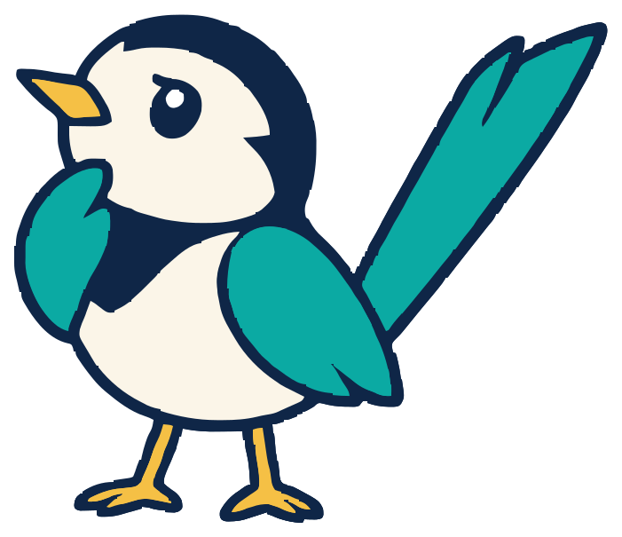
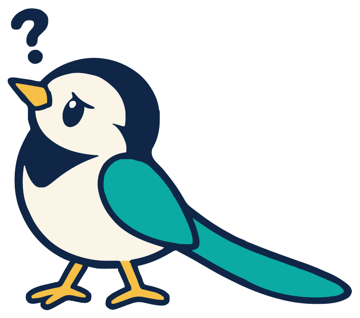
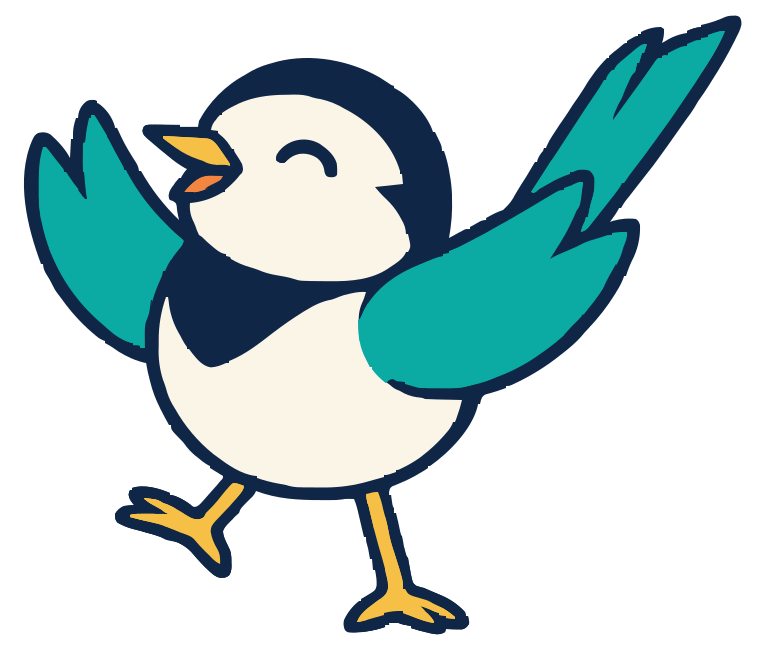

Velme
Write the goal. The AI proposes the code. A deterministic compiler decides.
An intent-driven programming language, kids first and professional by design. You keep the part that needs a person: what the program should do, and how to tell whether it does.
goal Add(a: Number, b: Number) -> Number:
plan: "Add a and b."
check:
- result == a + bHow it works

You write typed goals
What each goal does in plain language, which goals it may call, and the checks and examples its result must pass.

An LLM proposes IR
A validator accepts it or rejects it, never another LLM. The AI can't add calls or reach files, network or the clock.

The result is locked
Accepted code runs in a sandbox on a fixed budget. Running it again gives the same result, offline.
Status
The first alpha, v0.1.0-alpha.1,
shipped on 2 October 2026. The velme command checks, builds, tests, runs, traces and explains programs,
on a reference interpreter or a sandboxed WASM backend. Every example ships with its lock, so it runs with no API key.
It's early: nothing is on crates.io yet, and you install it from the repo with cargo install.
Work now is on making AI replies cheaper and more reliable.